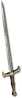

Set - Heyday
Onyx's Primal Rage
5 items, level 80, Barbarian

Onyx's Fallen Star
Myrmidon Greaves
Defense: 62-71
Required Level: 77
+170-200% Enhanced Defense
+25-35% Lightning Resistance
+25% Faster Run/Walk Speed
+20% Faster Hit Recovery
(2 items) Physical Damage Reduced By 15
(3 items) Magic Damage Reduced By 15
(4 items) +30 to Strength

Onyx's Solar Flair
Champion Sword
Damage: 24-54, two-handed 71-83
Required Level: 69
+200-300% Enhanced Weapon Damage
Adds 75-200 Damage
Attacker Takes Damage of X (X = 2 x character level)
+10% Damage Taken Added To Mana
(2 items) +7% Mana stolen per hit
(3 items) +12% Life stolen per hit
(4 items) +40% Increased Attack Speed

Onyx's Super Nova
Balrog Blade
Damage: 15-75, two-handed 55-118
Required Level: 75
+200-300% Enhanced Weapon Damage
+X to Maximum Weapon Damage (X = 3 x character level)
+30% Increased Attack Speed
Socketed (2)
(2 items) 12% chance to cast level 19 Nova on striking
(3 items) +50 to Life

Onyx's Meteor Shower
Balrog Skin
Defense: 410-517
Required Level: 80
+160-200% Enhanced Defense
+40% Faster Hit Recovery
+10-15% Increased Maximum Life
+10-15% Increased Maximum Mana
(2 items) +1 to Barbarian Skill Levels
(3 items) 15% chance to cast level 7 Meteor when struck

Onyx's Celestial Rage
Guardian Crown
Defense: 117-168
Required Level: 79
+2 to Barbarian Skill Levels
+15-20% Physical Damage Reduction
+15-25 to all Attributes
(2 items) +3% to Experience Gained
(3 items) +20% Increased Attack Speed
(4 items) +X to Attack Rating (X = 4 x character level)
Set bonuses
- 2 items: +25% to All Resistances
- 3 items: +2% to Experience Gained
- 4 items: +1 to All Skills
Full set
- +3 to All Skills
- +50% to All Resistances
- +3% to Experience Gained
- +100% Chance Items Roll Magic or Better